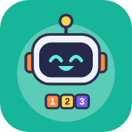
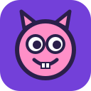

3º ano
Jogos educativos de Educação Digital

O que vem primeiro? — Missão Passo a Passo
Ajude o robô Pipo a organizar as etapas de tarefas do dia a dia. 15 missões · EF03TPA03

Monstrinhos! — O Laboratório das Criaturas Fantásticas
Crie, anime e conte histórias com o seu monstrinho. 30 missões em duplas, salvamento online · EF03TPA05